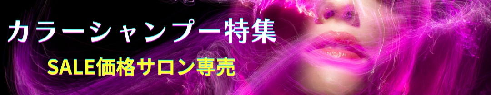
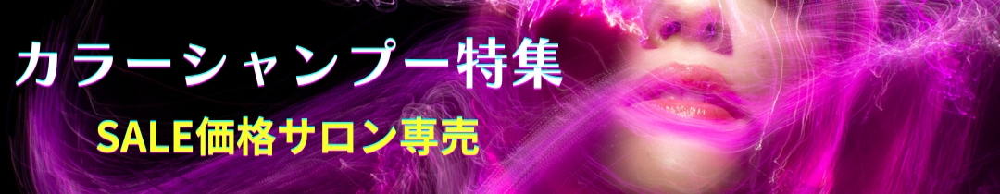

SKILLS
HTML / CSS（レスポンシブ対応も可）
基本構造からレスポンシブ対応まで、PC・スマホの両方を意識したコーディングを行います。
Visual Studio Code
HTML/CSS/JavaScriptのコーディングやWordPressカスタマイズ時に使用。拡張機能も活用しています。
Word Press（ブロックエディター対応）
テーマのカスタマイズやプラグインの導入に対応。簡単な更新マニュアルの作成も可能です。
Java Script（簡単な記述が可能）
基本的な構文やDOM操作、アニメーション表現など、動きのあるページに活用しています。
Photoshop v26.8（画像加工・バナー制作）
写真の補正・切り抜き・合成などを用いて、訴求力のあるビジュアルを制作しています。
Illustrator v29.6（ロゴ・アイコン制作）
ロゴや図形を使ったアイコン制作を通し、ブランドの世界観を伝える表現に挑戦しています。
バージョン管理システムの基本運用（Git/GitHub Desktop）
基本概念を理解し、GUIツールによる確実な運用スキルを確立。コミット・プッシュでプロジェクト管理の基礎として活用しています。
Microsoft Office 2019 / Google Workspace
文書作成・表計算・資料作成に対応。Excelはピボットテーブルまで操作可能です。
Canva（投稿画像・プレゼン資料制作）
スピーディに仕上げたい案件やSNS投稿用などに、手軽で見栄えの良いビジュアル制作に活用しています。
Chat GPT（業務効率化・資料作成・学習補助）
効率よく情報整理やアイデア出しを行い、Web制作や資格学習を自主的に進めています。
UI/UXを意識したデザイン制作
ユーザーの使いやすさ・伝わりやすさを重視し、情報設計からビジュアルまで丁寧に制作しています。


 
